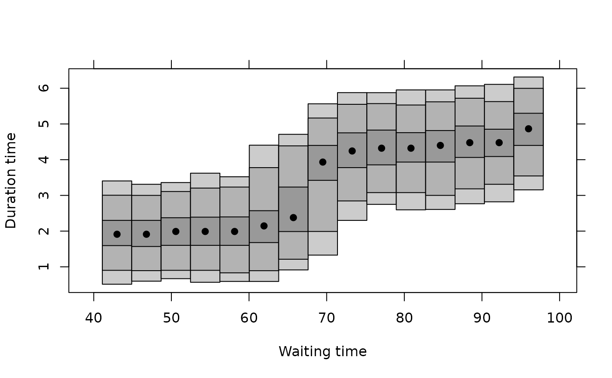
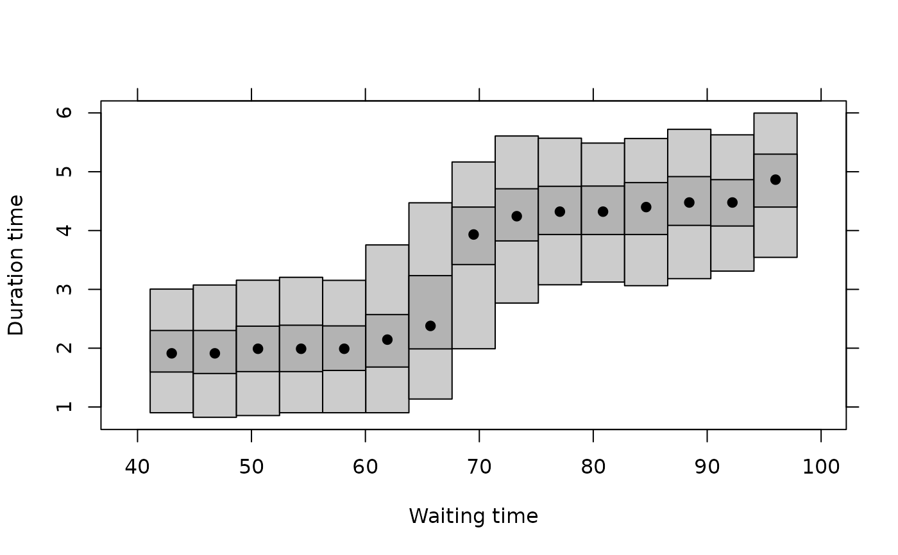

Calculate highest density regions continously over some conditioned variable.
Source:R/plotcde.R
hdr.cde.RdCalculates and plots highest density regions for a conditional density
estimate. Uses output from cde().
Usage
hdr.cde(den, prob = c(0.5, 0.95, 0.99), plot = TRUE, nn = 1000, ...)Arguments
- den
Conditional density in the same format as the output from
cde().- prob
Probability coverage level for HDRs
- plot
Should HDRs be plotted? If FALSE, results are returned.
- nn
Number of points to be sampled from each density when estimating the HDRs.
- ...
Other arguments passed to
plot.hdrcde().
Value
- hdr
array (a,b,c) where where a specifies conditioning value, b gives the HDR endpoints and c gives the probability coverage.
- modes
estimated mode of each conditional density
The result is returned invisibly if plot=TRUE.
References
Hyndman, R.J., Bashtannyk, D.M. and Grunwald, G.K. (1996) "Estimating and visualizing conditional densities". Journal of Computational and Graphical Statistics, 5, 315-336.
Examples
faithful.cde <- cde(faithful$waiting, faithful$eruptions)
faithful.hdr <- hdr.cde(faithful.cde, prob = c(0.50, 0.95))

faithful.hdr
#> HDRs for conditional density estimate
#> Conditioning values: 43.00, 46.79, 50.57, 54.36, 58.14, 61.93, 65.71, 69.50, 73.29, 77.07, 80.86, 84.64, 88.43, 92.21, 96.00
#> Levels: 50%, 95%
plot(faithful.hdr, xlab = "Waiting time", ylab = "Duration time")
